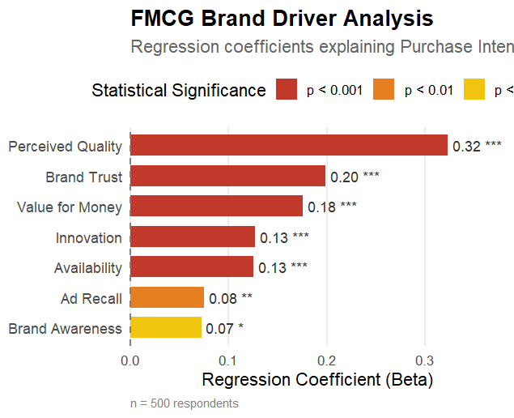

FMCG Brand Driver Analysis
THE PROBLEM
Brand teams track dozens of metrics — awareness, ad recall, quality perception, trust, value, innovation, availability — but rarely know which ones actually move purchase intent, or by how much. Without that, budget and messaging decisions default to gut feel rather than evidence.
SOLUTION
I built a driver analysis using multiple regression to quantify the relationship between seven brand health metrics and Purchase Intent, across a sample of 500 respondents. Each driver's regression coefficient (Beta) shows its independent impact on purchase intent, with significance levels flagging which effects are statistically reliable versus noise.
APPROACH
Starting from survey-level brand tracking data, I ran a linear regression of Purchase Intent against the seven brand metrics, extracted standardised coefficients and p-values for each, and visualised them as a ranked driver chart in R. Bars are ordered by effect size and colour-coded by statistical significance, so the strongest and most reliable levers are immediately visible.
BUSINESS INSIGHTS
- Perceived Quality is the dominant lever (β = 0.32, p < 0.001) — nearly double the next strongest driver. Product and quality perception investments carry the largest expected payoff on purchase intent.
- Brand Trust and Value for Money follow closely (β = 0.20 and 0.18, both p < 0.001), confirming that credibility and price-value perception are core, not secondary, purchase drivers for this category.
- Innovation and Availability tie at β = 0.13 (p < 0.001) — meaningful but secondary. New product news and distribution/on-shelf presence matter, but won't outweigh weaknesses in quality or trust.
- Ad Recall and Brand Awareness are the weakest, though still significant, drivers (β = 0.08, p < 0.01, and β = 0.07, p < 0.05). Media investment builds the top of the funnel, but on its own converts to purchase intent far less efficiently than quality or trust-building activity.
- Recommendation: reallocate marginal budget away from pure awareness/recall campaigns and toward product quality signalling and trust-building content (reviews, guarantees, transparency) for the fastest lift in purchase intent per unit of spend.
TOOLS USED
- R / ggplot2
- Multiple Regression
- Brand Tracking Data
- Consumer Insights
